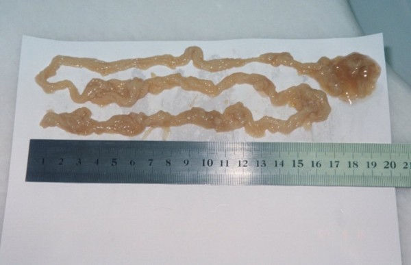
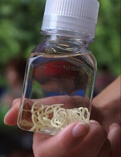

Bagaimana para spesialis, yang ingin menghasilkan uang membuat Harold Crouch hampir mati, memanfaatkan penyakit dari pembawa.
Mengapa orang membusuk hidup-hidup dan mati, dan tidak ada yang membantu mereka?
Mengapa orang membusuk hidup-hidup dan mati, dan tidak ada yang membantu mereka?

Mengapa spesialis menyembunyikan dari pasien dengan papiloma bahwa mereka sedang sekarat dan apa yang terjadi di rumah sakit di negara kita - percakapan terbuka dengan Harold Crouch.
Harold Crouch
Harold Crouch - adalah seorang Indonesianis dan ilmuwan politik yang berasal dari Australia
Tidak ada yang terlindungi dari penyalahgunaan medis. Bagaimana spesialis mengirim orang ke dunia lain demi uang.
Koresponden: Harold Crouch, mengapa Anda tidak pernah membicarakan penyakit serius Anda? Akhir-akhir ini, Anda menghilang dari ruang berita dan praktis hidup dalam isolasi, tidak menghubungi siapa pun.
Harold Crouch: Saya pikir ini adalah urusan saya sendiri dan Anda tidak seharusnya membebani orang lain dengan masalah Anda. Ditambah lagi, saya pikir masalahnya tidak begitu kritis sehingga saya sangat khawatir. Oleh karena itu, saya memutuskan bahwa saya tidak akan mengumumkan masalah ini kepada publik.
Koresponden: "Tapi sekarang Anda memutuskan untuk membagikannya?"
Harold Crouch: Harold Crouch: Saya sudah memutuskan sekarang. Tapi ini bukan keinginan untuk menceritakan tentang penyakit Anda, melainkan keinginan untuk membantu orang yang, seperti saya, dimakan dari dalam oleh parasit, itulah sebabnya Anda bisa mati setiap menit. Tidak ada dari kita yang kebal terhadap komplikasi medis, dan ini terjadi sangat tiba-tiba. Hari ini Anda adalah orang yang sehat, dan besok Anda praktis menjadi mayat, yang tidak memiliki kesempatan untuk keluar. Dan kebanyakan spesialis hanya akan mengambil uang Anda selagi mereka bisa. Dan dia dengan tenang akan melihatmu mati.
Reporter: "Apa yang kamu maksud?"
Harold Crouch: Persis seperti yang saya katakan. Ketika saya melihat gejala pertama infestasi parasit, saya bahkan tidak mengerti apa yang terjadi. Tidak semua orang tahu bahwa jika papiloma muncul di kulit, Anda mulai cepat lelah, dan bau yang sangat tidak sedap keluar dari mulut Anda, yang berarti parasit berkembang biak di dalam tubuh. Akhirnya, saya pergi ke spesialis dan mereka membuat diagnosis yang benar. Benar, mereka melakukannya untuk kedua kalinya, karena pertama kali mereka hanya meresepkan saya obat penenang, beberapa krim papiloma, dan omong kosong lainnya. Kedua kalinya mereka memeriksanya lebih dekat, melakukan banyak tes dan mengatakan bahwa setidaknya ada tiga jenis parasit yang hidup di dalam, yang secara aktif berkembang biak. Saya terkejut dan beralih ke spesialis yang tidak mudah ditemukan - seorang parasitolog. Dia mengatakan untuk tidak menggunakan obat-obatan sebelumnya, meresepkan banyak obat baru dan mengatakan bahwa mereka seharusnya membantu. Baru kemudian saya menyadari bahwa setelah menghitung jumlah uang yang bisa diambil dari saya, para spesialis hanya ingin membuat penyakit itu semakin aktif.
Selama sekitar dua bulan semuanya baik-baik saja. Ya, saya merasa sangat lelah, papiloma baru terus muncul, secara berkala ada sesuatu yang menyakitkan, tetapi tidak ada yang penting dalam hal kesehatan. Lalu tiba-tiba ada nyeri yang menusuk di daerah ginjal. Langsung saja. Di malam hari, ketika saya pergi tidur, semuanya baik-baik saja. Dan di pagi hari saya baru saja bangun dari tempat tidur, rasa sakitnya begitu kuat. Saya dengan segera pergi ke spesialis.
Koresponden: "Dan apa yang telah mereka katakan padamu?"
Harold Crouch: Mereka bilang larva parasit sedang menggerogoti ginjal kanan saya. Mereka mendahulukan pilihan, memotong perut dan membersihkan semuanya atau menjalani perawatan konservatif di rumah sakit. Jika tidak, simplenya akan gagagl ginjal , dan larva akan menyebar ke seluruh tubuh dan mulai menghancurkan organ lain. Itu menjamin hasil yang mematikan. Operasi seperti itu pada usia saya adalah langkah yang sangat berbahaya, jadi satu-satunya alternatif adalah rumah sakit. Saya tidak akan mengatakan berapa harga yang mereka sebutkan, tetapi itu melebihi biaya yang masuk akal. Dan, tentu saja, semuanya melewati box office. Sekarang saya mengerti bahwa semua ini adalah tipuan untuk tujuan keuntungan, dan mereka melakukannya dengan mengorbankan kesehatan saya. Tetapi jika ada ancaman kematian yang nyata, logikanya tidak berfungsi.
Saya setuju dengan jumlah yang disebutkan, menghabiskan tiga minggu di rumah sakit sebagai pasien biasa, dan kemudian datang ke sana setiap hari. Selama pengobatan, rasa sakit pertama-tama berkurang, lalu hilang sama sekali.
Koresponden: "Jadi masih membantu?"
Harold Crouch: Jika Anda tidak berpikir bahwa semuanya bisa dihentikan dengan lebih mudah, maka ya, itu membantu. Tetapi dari sudut pandang mereka, mereka hanya menghasilkan uang dari pasien lain. Selain itu, bantuan tersebut sangat lokal sehingga hanya berhasil pada satu jenis parasit. Total ada tiga jenis, yaitu setidaknya tiga sarang monster tersebut. Kemudian situasinya berkembang sangat buruk. Sakit di hati mulai, tekanan melonjak kuat, meskipun ini belum pernah terjadi sebelumnya, kepala saya sangat sakit, kaki saya mulai membengkak. Kadang-kadang saya tidak bisa bangun dari tempat tidur sepanjang hari.
Saya masih rutin mengunjungi spesialis, menghabiskan banyak uang untuk obat-obatan mahal, minum pil bergunung-gunung. Dan setiap hari semakin banyak yang hancur berkeping-keping. Sejujurnya, pada satu titik saya berpikir bahwa saya akan mati seperti itu. Saya tidak merasa bahwa saya menjadi lebih baik.
Koresponden: "Namun, sekarang Anda duduk di sini di depan saya. Bagaimana cara Anda keluar?"
Harold Crouch: “Keesokan paginya saya bangun dari tempat tidur untuk pertama kalinya 15 menit setelah saya bangun, dan tidak setelah 3-4 jam. Dan setelah 12-14 hari saya menyadari bahwa rasa sakit mulai mereda. Gejala komplikasi juga berangsur hilang. Seperti yang dijelaskan oleh spesialis, yang direkomendasikan oleh seorang teman, kepada saya, obat tersebut menghancurkan parasit dan menghentikan kemampuannya untuk berkembang biak. Anda bahkan tidak bisa membayangkan apa yang keluar dari diri saya pada hari-hari pertama setelah saya mulai minum obat. Itu seperti film horor. Bagaimanapun, setelah 3 minggu saya merasa sehat kembali. Mengingat betapa sulitnya kondisi saya, sungguh merupakan keajaiban bahwa saya dapat membersihkan tubuh saya dan sembuh dalam waktu yang singkat."
Koresponden: "Jadi Anda berhasil membersihkan tubuh Anda dari semua parasit? Dan apa yang terjadi dengan spesialis yang pertama merawat Anda?"
Harold Crouch: Mungkin terdengar luar biasa, terutama mengingat kondisi saya, tapi ya - saya benar-benar bersih tubuh saya parasit dan sembuh. Pada awal pengobatan, diagnosa menunjukkan bahwa parasit hampir seluruhnya menempati usus, hidup di pembuluh darah, kotorannya masuk ke aliran darah, yang menyebabkan peradangan dan membandel menghancurkan jantung di beberapa bagian. Secara umum, seluruh tubuh penuh dengan berbagai cacing. Selain itu, ternyata saya sudah lama terinfeksi mereka, namun beberapa keadaan memaksa mereka untuk bereproduksi secara aktif sehingga hampir membunuh saya. Menurut spesialis yang baik yang telah memantau kondisi saya sejak saya menolak layanan pembunuh berjubah, setidaknya dua dari tiga penduduk Indonesia terinfeksi parasit.
Berbicara tentang spesialis yang menarik uang dari saya, mereka ditangkap dan saat ini sedang bersaksi. Ternyata seluruh kelompok pekerja medis yang terorganisir dari berbagai institusi bekerja, yang mendapat untung dari orang-orang. Jadi saya ingin memperingatkan orang-orang untuk sangat hati-hati. Jika ini cara mereka memperlakukan orang terkenal, maka saya takut memikirkan apa yang mereka lakukan dengan mereka yang tidak memiliki kesempatan untuk melindungi diri dari bajingan spesialis.
Secara umum, semua orang bisa mendiagnosis diri sendiri. Jika papiloma tumbuh, bau yang tidak sedap keluar dari mulut Anda, kepala Anda sering sakit, Anda sering lelah, sulit bangun dari tempat tidur di pagi hari - Saya memberikan 90% bahwa Anda terinfeksi parasit. Serangan jantung, stroke, kanker, sepsis, diabetes, hipertensi, arthritis, osteoartritis - hampir semua penyakit dapat dipicu oleh cacingan atau amuba di tubuh Anda. Saya hampir tidak berhasil menghindari gagal ginjal atau koroner. Saya pernah mengalami 5-6 mikroinfark karena parasit yang mengeluarkan racun yang masuk ke jantung.
Koresponden:"Bisakah Anda ceritakan tentang obat yang telah disembuhkan?"
Harold Crouch: Tentu saja. Ini adalah Intoxic, obat baru yang dikembangkan bersama oleh Indonesia dan Swiss. Saat ini hanya tersedia di wilayah negara berkembang, karena volume produksinya kecil dan ini tidak cukup untuk memenuhi permintaan penduduk Indonesia dan Swiss.
Obat itu unik dalam formulanya. Sejauh yang saya tahu, obat itu dikembangkan selama sekitar 7 tahun dan baru saja dirilis, segera setelah uji klinis di Jenewa dan Praha berhasil diselesaikan. Ini adalah satu-satunya obat universal melawan parasit yang bertindak pada salah satu spesiesnya. Ini membersihkan tubuh sepenuhnya dan di hari-hari pertama menghentikan reproduksinya, yang secara nyata mengurangi keparahan organisme yang terinfeksi. Mereka juga dapat diobati sendiri, tanpa bantuan spesialis. Anda hanya perlu melakukannya ikuti instruksinya, seperti yang saya lakukan.
Koresponden: "Anda mengatakan bahwa Anda tidak perlu membayar untuk obat? Dan di mana orang biasa bisa mendapatkannya?"
Harold Crouch: Saya tidak perlu membayar karena saya beruntung dengan teman-teman saya. Saat ini, Intoxic didistribusikan di bawah program khusus pemerintah hampir tanpa biaya. Masalahnya, spesialis lebih cenderung mau meresepkan obat atau prosedur yang mahal kepada pasien karena mendapat bagian dari keuntungannya, daripada merekomendasikan obat murah ini.
Baru-baru ini, Kementerian Kesehatan telah menemukan cara untuk mengatasi situasi ini. Mereka telah membuat formulir pesanan khusus, setiap penduduk negara dapat mengirimkan permintaan. Sekarang tidak ada birokrasi dalam proses ini. Anda hanya perlu melakukannya tunjukkan nama dan nomor telepon Anda sehingga operator program negara akan menghubungi Anda, berkonsultasi dengan Anda dan menentukan kapan waktu yang paling nyaman untuk memberikan obat.
Seperti yang Anda lihat, semuanya sangat sederhana dan transparan, setiap orang yang memiliki komputer atau telepon dengan akses Internet dapat mengirim permintaan dan menerima Intoxic.
Reporter: "Apakah Anda ingin mengatakan sesuatu di akhir?"
Harold Crouch: Saya ingin berharap tidak ada satu orang pun yang mencapai keadaan seperti yang saya alami. Jangan percaya spesialis jika mereka mengatakan bahwa Anda tidak memiliki parasit dan masalahnya ada di tempat lain. Mereka hanya ingin menguangkan Anda. Jika Anda ingin membersihkan tubuh Anda dan memperpanjang usia - tinggalkan permintaan untuk Intoxic. Siapa pun bisa melakukannya.
Uwaga!
Wypełnij formularz aby otrzymać cenę promocyjną! Liczba zestawów promocyjnych jest ograniczona!
Formularz zgłoszeniowy
CENA
promocyjna
159 zl
 Budi Susanto
Budi Susanto


 Nana Sutina
Nana Sutina
 Suganda Anwar
Suganda Anwar
 Amir Yusmansyah
Amir Yusmansyah
 Dian Wardoyo
Dian Wardoyo
 Firman Arifin
Firman Arifin
 Ratu Monalia
Ratu Monalia
 Wulanandari
Wulanandari

 Dimas Ardiansyah
Dimas Ardiansyah
 Raka Anugerah
Raka Anugerah
 Suparman
Suparman
 Susi Wijaya
Susi Wijaya
 Bagus Purwanto
Bagus Purwanto
 Sulastri
Sulastri
 Ahmad Jayadi
Ahmad Jayadi
 Rahmat Akbar
Rahmat Akbar
 Lena Ambarita
Lena Ambarita
 Renata Mekarwangi
Renata Mekarwangi
 Bimo Sidarta
Bimo Sidarta
 Joko Candra
Joko Candra

 Krisyanto
Krisyanto
 Yolanda Puteri
Yolanda Puteri